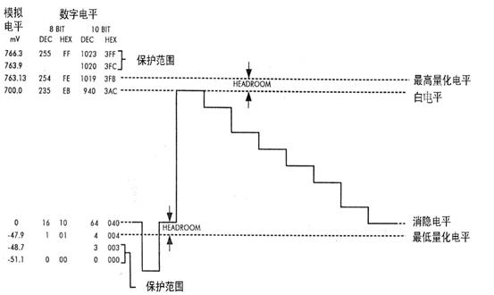
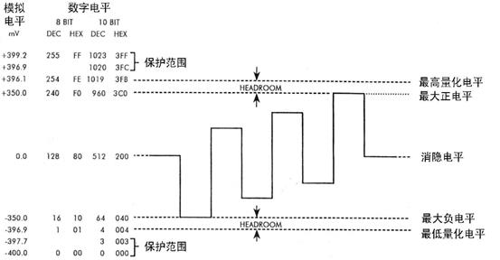
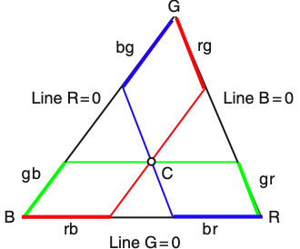
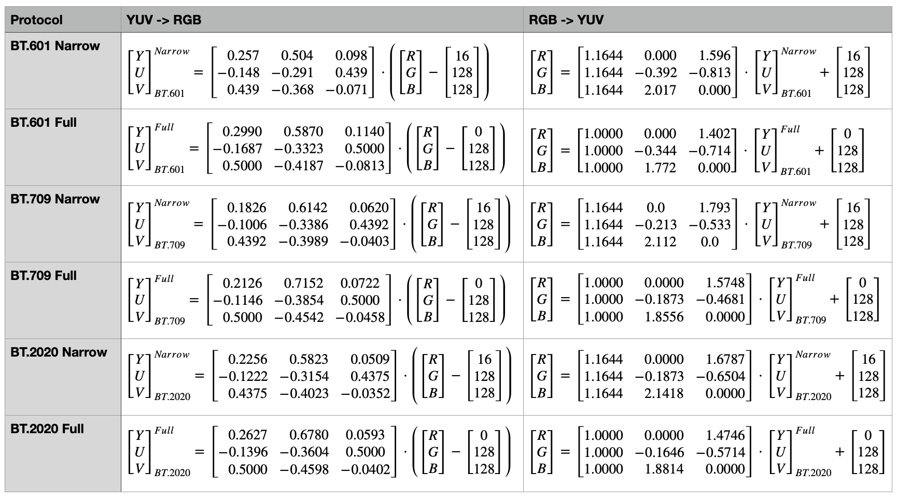
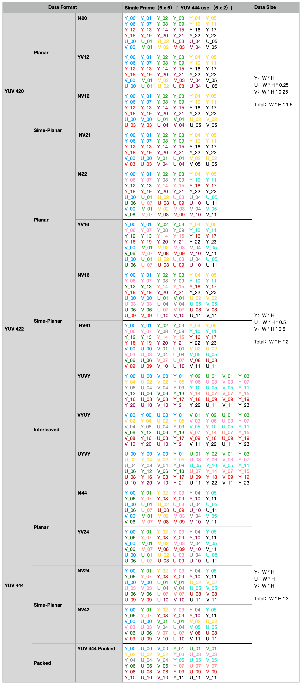

2.6.3 YUV 体系色彩格式
传输格式（Transport Format），即当下我们常用的 YUV 色彩格式也被称为 YCbCr、YPbPr、Y′UV 色彩格式。其中，Y/Y′ 指代光亮度分量，U/Cb/Pb 指代蓝色色度分量，V/Cr/Pr 指代红色色度分量。YUV 色彩格式受启发自，CIE LUV 中用与 xyY 色度图有线性转换关系的 uv 分量表示平面色彩信息的思想，最初被 国际电信联盟无线电通信部门（ITU-R [International Telecommunication Union Radiocommunication Sector]） 做为 彩色图像编解码流水线（Color Image Pipeline） 的一部分提出，用来 对图片进行压缩传输。
在之前的讨论中我们知道，CIE LUV 在指定白点情况下，可以直接将其所含色彩经由线性变换转换到 CIE XYZ 色彩空间，再从 CIE XYZ 依托固定转换矩阵，变换到 CIE RGB 色彩空间。将两个过程进行合并可知，存在从 LUV 到 RGB 的固定转换矩阵。因此，做为 CIE LUV 思路衍生下的实践产物，YUV 同样也具有这一特点。不同于 LUV 设备无关，YUV 是设备相关的。其受限于外部因素，对整体色度平面的处理上有一定程度的调整，使 YUV 根据采用规格的不同，有着不同的设备相关化调参。不过设备相关化处理带来的弊端，就是 YUV 相较于 LUV 来说色差变换更为不均匀。
当前 YUV 的常用规格 有三种：BT.601、BT.709、BT.2020。其中，BT.601 最早于 1982 年提出，最新一次修订于 2011年，适用于 标准画质电视（SDTV [Standard Definition Television]） [46] 。BT.709 最早于 1990 年提出，最新一次修订于 2015年，适用于 高清画质电视（HDTV [High Definition Television]） [47] 。BT.2020 最早于 2012 年提出，最新一次修订于 2015年，适用于 超高清画质电视（UHDTV [Ultra-High Definition Television]） [48] 。
YUV 是目前唯一做到了工程意义上打通图像数据压缩、传输和存储的色彩格式。为了便于说明，我们这里假设 Y、U、V 通道皆以当下主流的 8-bit 形式存放数据。
YUV 的数字电信号特征
YUV 被设计的目的主要就是为了进行数据传输，而数据传输就意味着数模信号转换。所以，根据可用电信号区间，YUV 存在两种有效范围：狭隘区间（Narrow Range）、完整区间（Full Range）。
- 狭隘区间 中，Y通道取值范围为 [16, 235] ，U、V通道取值范围为 [16, 240] ；
- 完整区间 中，Y、U、V通道取值范围均为 [0, 255] ；
大多数应用场景下，YUV 都以狭隘范围表示，究其原因是由电讯号传输特性决定的。在广播电视系统中，为了防止过高和过低的信号造成 临界电平过载（Critical Level Overload） 现象，会人为的在信号可用模拟电平区段上，预留出一定的 “保护带”，保护最高位和最低位的电平不被使用。为了便于指代，电气学上把“保护带”称为 保护范围（Protection Range），被保护的最高位和最低位电平称为 保护电平（Protection Level），用于指代零信号量的电平被称为 消隐电平（Blanking Level），可用电平区段的上边界称为 白电平（White Level），下边界称为 黑电平（Black Level），黑白电平之间就是 信号电平（Signal Level） 了。
对于 8-bit 传输信号来说，保护电平为 0 mV 和 255 mV 。Y通道取 16 mV 为消隐电平，可用电平区间上下分别预留了 [236, 254] 和 [1, 15] 的保护范围；U、V 通道则以 128 mV 为消隐电平，可用电平区间上下分别预留了 [241, 254] 和 [1, 15] 的保护电平。所有可用的信号电平，分别组成了 Y、U、V 三通道取值范围的狭隘区间。

图 2.6.3-1 YUV Y通道信号电平分配图 [49]

图 2.6.3-2 YUV U通道信号电平分配图 [49]

图 2.6.3-3 YUV V通道信号电平分配图 [49]
对于不需要进行数据传输的场景，就不再需要保护电平了。 此时 8-bit 信号电平可以取用到 [0, 255] 的完整范围表示。
解释清楚信号范围划分，接下来就该说明 ITU 对于 YUV 色彩格式下的 RGB YUV 颜色互转的定义了。在 YUV 和 RGB 的转换上，狭隘范围（Narrow）和完整范围（Full）并不影响推算，仅影响最终的转换矩阵结果。
YUV 与 RGB 间的相互转换
从工程角度出发，YUV 需要尽可能简单的处理过程。所以，YUV 在采用 LUV 转换思路的基础上结合了 HSL 的坐标处理思想，以 XYZ 坐标系下 xyY 色度图所在平面，截取色域三角形有效范围构建质心坐标的形式，进行了 YUV 色彩格式的格式空间关键要素定义。
不同于 LUV 和 HSL，YUV 并没有对完整的可见光色域进行拓扑变换，而是需要 手动设定 RGB 三原色的代表点和质心，来确定围成的色域范围和坐标系。因此，YUV 的色彩空间天然就是有缺陷的。不过，放弃完整色域换来了 YUV 足够通用的方法论。后续规格上的更新，只用按照工程测定结果来进行色域范围的调整，就能延续同一套计算过程满足新的需求。 这种可根据情况修整的延展性，也是 YUV 被广泛运用的原因之一。
那么，在 YUV 中 RGB 三原色的选取是否就是完全随意的呢？ 答案是否定的。
RGB 三原色代表点的选取，完全依赖于设备本身对三原色的设定。即，设备的 RGB 色彩格式的格式空间决定了设备的三原色。由于不同的设备间差异可能非常大，想要使 YUV 格式通用，就必须在 YUV 体系的色彩格式规格制定时，固定做为标准的 RGB 三色坐标，通过自身格式空间的线性特征，来抹平不同设备间的转换误差。
我们假设 YUV 格式空间中，用于参照的 R点取自 xyY 色度图中坐标 R(xR, yR) ，G点取自 xyY 色度图中坐标 G(xG, yG) ，B点取自 xyY 色度图中坐标 B(xB, yB) 。有下图：

图 2.6.3-4 YUV 格式空间在 xyY 色度图上的色域裁剪说明
根据图示可知，落于 RGB 围成三角形范围内的任意点 C ，与三角形顶点存在关系：
C=B+(gB+rB)=R+(bR+gR)=G+(bG+rG)C−G=b⋅(B−G)+r⋅(R−G)⇒
取质心 W 为轴心。指定 YUV 色彩空间下 Y+U+V=1 ，选择 U=Cb⋅(B−W) 、 V=Cr⋅(R−W) 为坐标轴， Cb 、 Cr 为归一化因子。有 Y 有效区间为 [0, 1] ， U 有效区间为 [−Umax, Umax] ， V 有效区间为 [−Vmax, Vmax] 。
这里以 YUV 对应规格选定的 RGB 三色电信号，经过 电位差伽马预矫正（Gamma pre-corrected） 得到的归一化电平测量值 (WR ,WG ,WB) 为依据 [46] [47] [48] ，取 YUV 光亮度参数有线性公式 Y=WR⋅R+WG⋅G+WB⋅B 。则由点 C 与质心 W 的向量差 C−W=(C−G)−(W−G) 推得：
YUV=WR⋅R+WG⋅G+WB⋅B=1−WBUmax⋅(B−Y)=1−WRVmax⋅(R−Y)
上式即为 YUV 格式空间的狭义配色函数。需要注意的是，测量值 (WR ,WG ,WB) 是规格强相关的。其取值仅取决于规格中指定的 RGB 三色对应电信号电配比。
根据 RGB 与 YUV 归一化后 Y+U+V=R+G+B=1 的数理特征，很容易就能证明 YUV 和 RGB 的线性等价关系：
Y+U+VR+G+B=R+G+B=1=WG1(WG⋅R+WG⋅G+WG⋅B)=WG1(Y+(WG−WR)⋅G+(WG−WB)⋅B)=3Y+WGWG−WR⋅(R−Y)+WGWG−WB⋅(B−Y)=3Y+WGWG−WR⋅Vmax1−WR⋅V+WGWG−WB⋅Umax1−WB⋅U=(Y+Vmax1−WR⋅V)+(Y+WGWR⋅Vmax1−WR⋅V+WGWB⋅Umax1−WB⋅U)+(Y+Umax1−WB⋅U)
线性的变化关系对 YUV 相当重要，这意味着上式可直接以转换矩阵 MRGB2YUV 表示，有：
CRGB=MRGB2YUV−1⋅CYUV=MRGB2YUV−1⋅MRGB2YUV⋅CRGB=E⋅CRGB
这一点保证了不论何种设备，设备间经过 YUV 色彩格式传递的 RGB 数据，在转换前后都有一致的值，维护了数据的准确性。
现在，理论基础得到了佐证。在此条件下，如果已经测得关键参数值，怎样计算转换矩阵 MRGB2YUV 呢？
以 BT.601 的狭隘区间（Narrow Range） 为例。规格中取 D65 作为白点和质心 W ，测得 (WR ,WG ,WB) 为 (0.299, 0.587, 0.114) 。经过值域范围平移后，带入狭义配色函数计算，有：
(Y−16)⋅255(U−128)⋅255(V−128)⋅255=(+0.299⋅R+0.587⋅G+0.114⋅B)⋅(235−16)=(−0.299⋅R−0.587⋅G+0.886⋅B)⋅(235−16)=(+0.701⋅R−0.587⋅G−0.114⋅B)⋅(235−16)
换算一下就能得到 MRGB2YUV 的表达式：
⎣⎡YUV⎦⎤BT.601Narrow=⎣⎡0.257−0.1480.4390.504−0.291−0.3680.0980.439−0.071⎦⎤⋅⎝⎛⎣⎡RGB⎦⎤−⎣⎡16128128⎦⎤⎠⎞
可见，转换矩阵 MRGB2YUV 的计算结果，只依赖于规格条件所指定的 (WR ,WG ,WB) 测定值和 YUV 的取值范围。
其他规格下的计算方式也是一样，并无差异。这里列出 常用的主流规格带入公式后的结果，方便工程参考：

图 2.6.3-5 YUV 常用规格转换矩阵表
关于 YUV 色彩格式的格式空间部分，到这里就说明完毕。接下来我们来看组成 YUV 色彩格式的数据存储部分。
YUV 的数据存储
目前主流的 YUV 色彩格式的 存储格式族（Data Format Family） 主要有三种，分别是 YUV420、YUV422、YUV444。
- YUV420 族 下的存储格式，以 4个Y通道分量共用一组UV分量构成（YYYY U V）；
- YUV422 族 下的存储格式，以 2个Y通道分量共用一组UV分量构成（YY U V）；
- YUV444 族 下的存储格式，三通道分量一一对应（Y U V）；
而每一种 YUV 存储格式族，根据 Y通道、U通道、V通道的数据排布，又可以分为：平面（Planar）、半平面（Semi-Planar）、夹层（Interleaved）、打包（Packed） 四种存储的 数据分组类型。
- 平面（Planar） 类型，Y、U、V 数据独立存放；
- 半平面（Semi-Planar） 类型，Y通道数据独立存放，UV通道数据交替打包存放；
- 夹层（Interleaved） 类型，三通道数据以两个Y与一组UV为数据组，封包排列存放；
- 打包（Packed） 类型，三通道数据以一组YUV为数据组，封包排列存放；
因此，整个 YUV 的存储格式从属关系如下图所示：

图 2.6.3-5 YUV 存储格式（Data Format）谱系图
这些 YUV 存储格式最大的特点在于数据组成上。我们用相同颜色表示位于同一组的 YUV 数据。 假设存在一张包含 36 个像素点的 6x6 的图片（为了避免颜色重复，YUV444 用 12个像素点的 6x2 图片）。 以 Y、U、V 分别代表对应通道的有效数据，所有存储格式数据排布如下：

图 2.6.3-6 YUV 存储格式（Data Format）对比说明
显然，从数据的压缩程度上来说，YUV420 族明显具有较高的压缩比。但由于YUV 格式并不是完全无损的，与之相对的问题就是高压缩比导致的图片细节损失。不过图片的细部信息大都存在于灰度图上，而这部分信息主要由 Y 通道保存，因此人眼难以察觉丢失的颜色细节。相比较高压缩比带来的优势，这部分损失可以忽略不计。所以，在音视频数据传输及图像存储中，工程上常常采用 YUV420 族下的色彩格式进行保存。
至此，有关音视频工程中的图片色彩处理部分，基本讲解完毕。下一章我们将利用目前已掌握的音视频知识，来做针对一段音频和一张图片基本分析的工程实践。